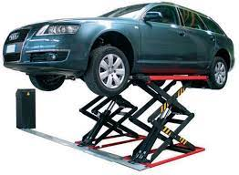

Работа автосервиса немыслима без подъемника для автомобилей. Он представляет собой механизм, который поднимает машину, обеспечивая удобное выполнение технических или ремонтных работ.
Как выбрать подъемник для автосервиса
Работа автосервиса немыслима без подъемника для автомобилей. Он представляет собой механизм, который поднимает машину, обеспечивая удобное выполнение технических или ремонтных работ. Выбор подъемника – важный аспект оснащения автосервиса, ведь от него напрямую зависит и качество работы, и безопасность.

Подъемники различаются по ряду признаков.
В каталоге компании «Центр технического оборудования» представлены разнообразные подъемники для автосервиса цена которых доступна, а качество и надежность не вызывает сомнений.
По конструкции выделяют следующие виды подъемников:
Первые наиболее распространены, в их структуру входят две вертикальные стойки, к которым прикреплены подхваты, поднимаемые одновременно. Их грузоподъемность составляет 4-5 т, они способны работать и с легковыми автомобилями, и с небольшими грузовиками. Одно из главных достоинств – подъем автомобиля в положении со свободными колесами.
Четырехстоечные состоят и четырех вертикальных стоек, к которым прикреплены платформы для машин. Они наиболее устойчивы, их грузоподъемность максимальна, с ними можно проводить как ремонтные работы, так и сход-развал. Важный критерий выбора такого подъемника – высота подъема, рекомендуется выбирать модели с высотой не менее 1,8 м.
У ножничных моделей высота подъема варьируется в пределах 1-1,8 м. Это компактные устройства, подходящие для небольших автосервисов.
Тип привода
При выборе подъемника стоит обратить внимание, каким приводом он оснащен:
Выбор конструкции и типа привода определяется потребностями автосервиса. Например, для небольшого помещения подойдет ножничный подъемник, а для работы с тяжелыми грузовиками требуется электрогидравлический.
Основные критерии
Выбирая подъемник, учитывают несколько характеристик:
При необходимости проконсультируйтесь со специалистом.